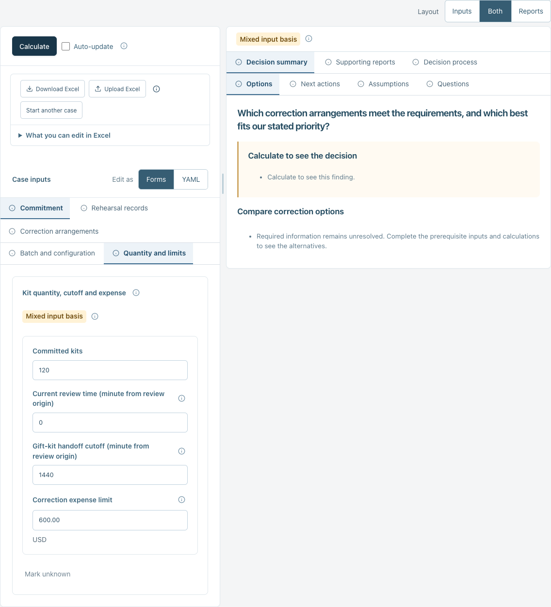
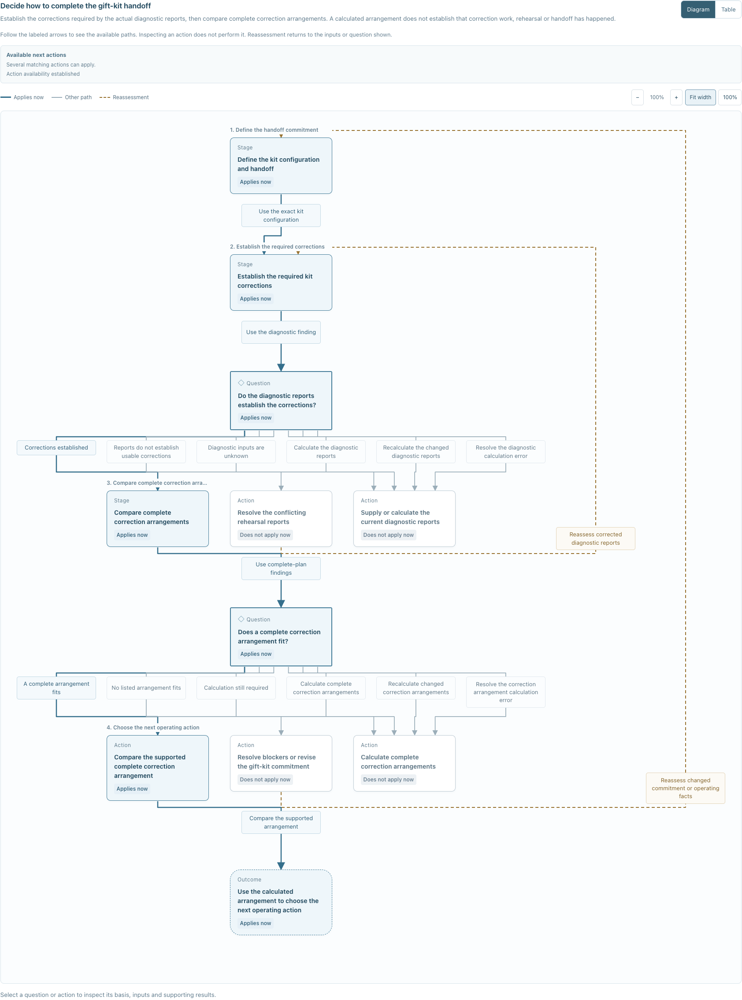
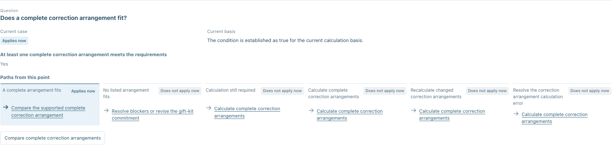
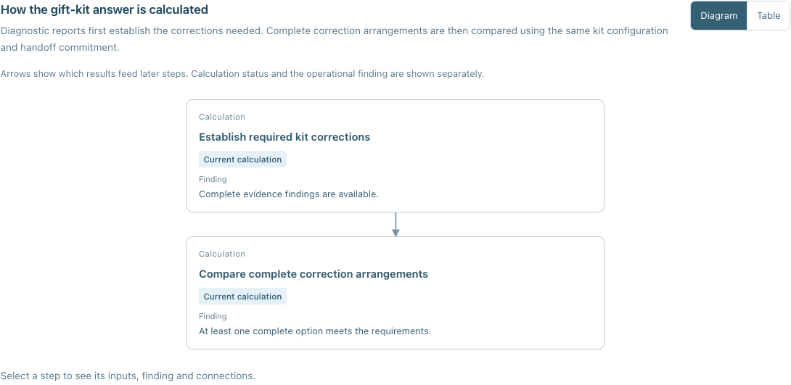

Article 1 4 min read
What actually needs fixing?
A failed scan does not tell Leah which complete correction to buy. Start with what the scoped gift-kit records establish before choosing a response.

Service and experience operations / Gift-kit readiness
Follow Leah through focused gift-kit decisions, then see how a developer can bring the same review into campaign screening and a custom application.

Gift-kit readiness / Articles
Follow the business decisions in order, or take the developer path to connect those assessments with the team’s own tools. Each article answers one question and points to the next.
For campaign owners and operations teams
Establish what needs fixing, justify a correction, check its booking and determine what would support the actual handoff.
Article 1 4 min read
A failed scan does not tell Leah which complete correction to buy. Start with what the scoped gift-kit records establish before choosing a response.
Article 2 4 min read
The same complete gift-kit correction can be sensible with a full day available and too slow with thirty minutes left. Compare the two decisions under one cost-first policy.
Article 3 4 min read
Keep the urgent campaign fixed and change only the insert revision named by the external booking. See why the same quote can support a correction in one context and leave none supported in another.
Article 4 4 min read
A supported correction is a proposal. Follow the separate records that support an actual gift-kit handoff, and see why later contradictory evidence requires another look.
For application developers
Screen campaigns with the CLI, continue a flagged case through the SDK and preserve the operating history behind later findings.
Article 1 5 min read
Turn current campaign files into a focused intervention queue, with an owner, a reason and the complete case behind each next action.
Article 2 5 min read
Use the SDK to open a flagged campaign, apply changed inputs and present a current finding through shared report views—without rebuilding its reasoning.
Article 3 5 min read
Keep a chosen correction and subsequent operating records connected to their basis, so later evidence changes what the team can claim without erasing what happened.
Gift-kit readiness / Reusable structure
This is Hermod’s classification of the example, using our convention for decision patterns, supporting reasoning and implementation.
| Level | In this case |
|---|---|
| Problem family | Restore a defective deliverable while protecting the recipient experience, original quantity, deadline and expense boundary. Connect the parts to their purpose. |
| Decision pattern | Establish what scoped observations support, compare complete corrections, then make and maintain a corrective commitment with a fresh check of the actual output. Explore Diagnose Before Correcting. |
| Supporting reasoning | An evidence assessment establishes what the scoped observations support. Its fault finding feeds a commitment assessment of complete corrections; the stated priority compares arrangements that meet the requirements. See what each assessment establishes. |
| Implementation | Hermod’s evidence and planning apps supply connected calculations within an authored workflow. Complete findings pass into the next step without analytical signoff. The CLI and SDK reuse calculation operations while company tools supply their own imports and interface. Business decisions and actual operating records remain separate from calculated support. |
Gift-kit readiness / Working examples
The business series begins with the Gifting operations Marketplace workflow. The integration series uses the separate Gift-kit Handoff Desk sample, which also retains operating records. They share the business problem and report structure; each has its own definition and scoped case.

The illustration separates the stakeholders’ concerns from the conditions the configured assessments check. A lower quote alone cannot establish that the complete correction protects the recipient experience and handoff promise.
In Decision Lab, install or update Marketplace → Gifting operations, then choose Explore example for Plan a gift-kit commitment 2.7.0. Choose Start with my data for a separate blank case. The article screenshots show the verified local production preview 2.8.0; the public site can retain its earlier interface.

Input and report tabs navigate independently. Forms/YAML switching preserves drafts. Excel import and export sit in a disclosure; their stated scope applies. Inspecting a report records no choice, authorization or actual work.
Decision process connects the authored questions, findings and available responses. Highlighted paths apply to this case; dashed paths return for reassessment. Use Fit width, zoom or Diagram / Table, then select a point to inspect its basis.


Case details → Calculation history → Inspect calculation dependencies shows how the evidence finding supplies the planning assessment. Opening either view performs no calculation or operating action.

The native capture record retains the exact local build, workflow, cases and findings, including unchanged inspection exports.
The campaign queue passes compatible native reviews into the Handoff Desk. These examples use their own 4.1.0 calculation workflow and current campaign records. The desk’s operating-record checks are part of that authored integration. A Marketplace case is not assumed to be an interchangeable file.
The sample repository and current integration capture record provide the implementations and scoped evidence. Sources, approval systems, durable storage and the actual work remain company responsibilities.
Follow a shared problem or assessment into a different business context. Each example keeps its own requirements, records and conclusion limits.
Shared assessment pattern / Commitment assessment
Maya also compares complete arrangements under a cost-first policy. The business records differ, but a closing booking window can justify extra expense just as a tight handoff window can.
Shared assessment pattern / Commitment assessment
A replacement cook and a correction quote each solve only part of a decision. Elena’s example shows commitment assessment checking the full roster and the consequences of a reassignment.